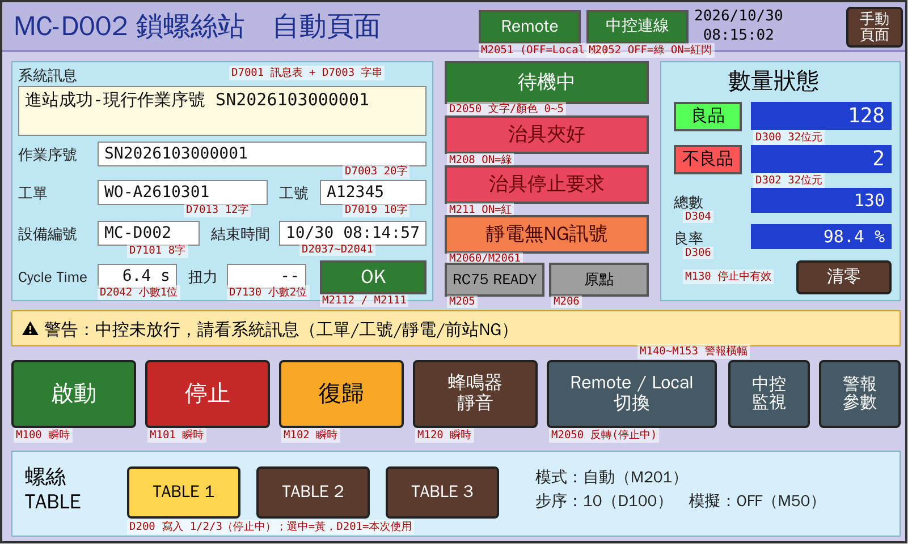
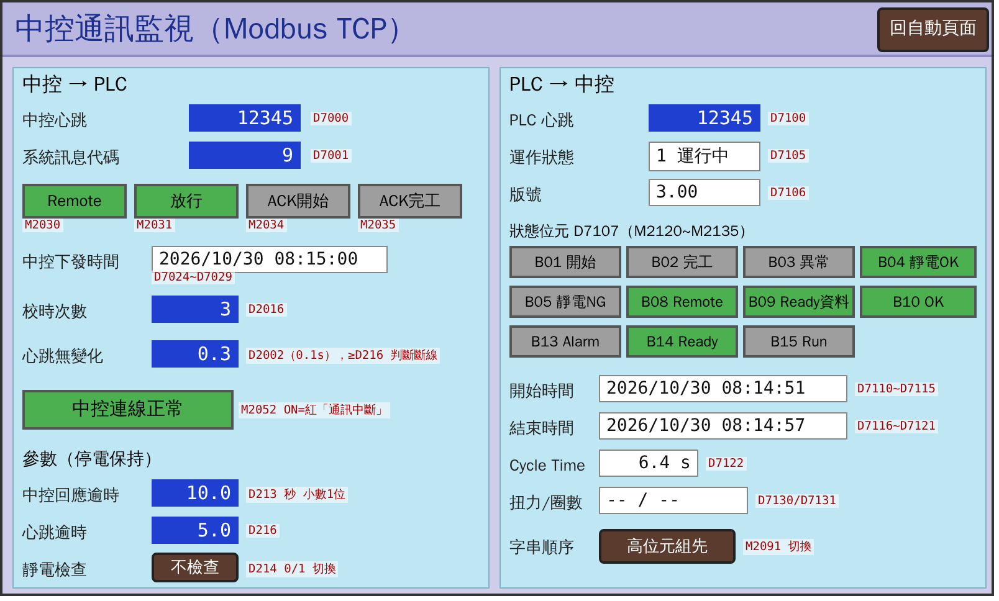

| 機台 | 日東精工 FM513VZ-01-NX-100（S/N U17984），RC75-T1 控制器、NX020T2-07 起子 |
|---|---|
| 主控 PLC | 三菱 FX5S，程式 v3.1（專案檔 ScrewMachine_v3_1.gx3） |
| HMI 畫面 | 自動頁面、中控通訊監視（v3）、手動頁面 |
| 文件版本 | SOP v1.0 2026-10-30 |
| 測試日期 | 年 月 日 |
| 測試員 | |
| 負責工程師 |
本手冊把測試分成 9 個階段（A～I）。一定要照順序做，不可以跳。每個階段最後有一個「關卡」，要負責工程師簽名，才能進入下一階段。
| 編號 | 做法（你要做的事） | 應該看到（正確結果） | 記錄（寫下實際看到的） | 結果 |
|---|---|---|---|---|
| D2 | 在 HMI 按「復歸」一次 | 紅燈熄滅、黃燈亮 | 實際：＿＿＿＿＿＿ 照片＃＿＿ | ☐ OK ☐ NG |
| 看到／聽到／聞到 | 處理 |
|---|---|
| 異常聲音、撞擊聲、起子空轉不停 | ① 拍急停 ② 手離開、人後退 ③ 叫工程師 ④ 記錄：時間、步驟編號、HMI 畫面拍照 不要按復歸、不要重試，等工程師判斷。 |
| 冒煙、焦味 | |
| 動作方向不對、動作不停、動作和步驟寫的不一樣 | |
| HMI 出現紅色異常，而且你不知道為什麼 | |
| 任何你不確定、覺得怪怪的事 |
我已經讀完並了解上面的安全規則。
測試員 負責工程師 日期
| 角色 | 負責 |
|---|---|
| 負責工程師 | 確認 PLC 程式版本並寫入實機 PLC、送電／斷電、上鎖掛牌、確認【待確認】事項、急停手、判斷異常、每個關卡簽名。只有工程師可以操作 GX Works3。 |
| 測試員 | 照步驟按 HMI、觀察、計時、拍照、填表。發現不對就喊停。 |
| 中控人員（H 階段） | 操作中控系統（car_light_system）：掃碼、工單、工號、放行、對照中控收到的資料。 |
| ☐ 本手冊（列印）、原子筆 | ☐ 手機（拍照、錄影、碼錶） | ☐ 護目鏡、靜電手環 |
| ☐ 測試用廢板 ≥ 15 片 | ☐ 正式工件 ≥ 30 片（I 階段） | ☐ 螺絲（φ3×12 盤頭自攻，十字 No.2） |
| ☐ 直尺或游標卡尺（量間隙） | ☐ 扭力計（有的話） | ☐ 「測試中」警示牌、上鎖用具 |
| 項目 | 規格（日東精工規格書） | 現場實際（填寫） |
|---|---|---|
| 電源 | AC200V 60Hz 單相，NPN | |
| 氣源 | 0.4 MPa，接頭 φ8 | ＿＿＿ MPa |
| 螺絲 | 自攻，盤頭，φ3 mm × 12 mm，頭徑 ≤ φ5.5，十字 No.2 | |
| 目標 | 3 秒／點，扭力 0.6（0.5～0.7）N·m | |
| 起子 | NX020T2-07，輸出扭力 0.5～2.0 N·m，最高 840 rpm | |
| 行程 | 螺絲導引行程 100 mm |
附錄 D 的【待確認】事項沒有填完，不可以開始 D 階段以後的測試。
下面是設計畫面，數字是範例，不是現場實際值。紅色小字是給工程師看的 PLC 位址，測試員可以忽略。

| 區域 | 看什麼 |
|---|---|
| 右上「Remote」 | 綠色＝連中控模式（Remote）；灰色＝單機模式（Local）。 |
| 右上「中控連線」 | 綠＝中控正常；紅色閃爍＝中控通訊中斷（中控還沒接的時候是正常的）。 |
| 中間大方塊（狀態） | 停止／待機中／加工中／等待中控／異常／手動。 |
| 治具夾好、治具停止要求 | 綠＝有訊號；治具停止要求亮紅＝治具要求停機。 |
| RC75 READY、原點 | 兩個都要綠色，起子才可以動作。原點＝起子在最上面的安全位置。 |
| 數量狀態 | 良品、不良品、總數、良率。「清零」只有停止中有效（測試中不要按，除非步驟要求）。 |
| 黃色警告橫幅 | 顯示目前的警告或異常文字。請照抄到記錄欄。 |
| 按鈕列 | 啟動、停止（鎖完這顆才停）、復歸、蜂鳴器靜音、Remote/Local 切換（停止中才有效）、中控監視、警報參數。 |
| 螺絲 TABLE | 選 RC75 的鎖付程式 1／2／3，黃色＝選中。只有停止中可以改。 |
| 右下 | 模式（自動／手動）、步序（見附錄 B）、模擬：一定要是 OFF。 |

| 區域 | 看什麼 |
|---|---|
| 中控心跳／PLC 心跳 | 兩個數字一樣，而且大約每秒加 1。不動＝中控沒在送。 |
| 心跳無變化 | 正常時接近 0；到 5.0 秒就判定斷線。 |
| Remote、放行、ACK開始、ACK完工 | 中控送過來的訊號，綠＝ON。 |
| 中控下發時間、校時次數 | 中控給的時間；PLC 時鐘被校正一次，校時次數加 1。 |
| 參數（停電保持） | 中控回應逾時（v3.1 預設 30.0 秒）、心跳逾時 5.0 秒、靜電檢查（不檢查／檢查）。測試員不要改。 |
| 右邊 PLC → 中控 | 運作狀態、版號（v3.1 應顯示 3.01）、狀態位元、開始／結束時間、Cycle Time。 |
本手冊沒有手動頁面的截圖。依 PLC 程式，手動頁面應該有下列按鈕，【待確認：實際按鈕文字，請工程師在右欄寫上】。
| 功能 | 按下去會怎樣 | HMI 上的按鈕文字 |
|---|---|---|
| 自動／手動切換 | 停止中按一下切換。手動時右下顯示「手動」。 | |
| RC75 RESET（異常重置） | 按住時送出 RESET，清除 RC75 異常。起子不會移動。 | |
| RC75 RETURN（回原點） | 按住時送出 RETURN，起子回到原點（往上）。 | |
| 送螺絲 | 按住時送出送螺絲訊號。 | |
| 單次鎖付 | 按一下＝鎖一顆（按住也只鎖一顆）。起子會下降、旋轉、再上升。 | |
| 機台待機（給治具） | 按住時送「機台待機」給治具。 | |
| 機台停止（給治具） | 按住時送「機台停止」給治具。 |
| 編號 | 做法 | 應該看到 | 記錄 | 結果 |
|---|---|---|---|---|
| A1 | 請工程師確認主電源開關 OFF、氣源關閉，並掛上「測試中」牌、上鎖。 | 主電源 OFF、氣壓表 0、牌子已掛。 | 上鎖人：＿＿＿ | ☐ OK ☐ NG |
| A2 | 記錄銘牌：機型、序號（起子機、RC75、治具、主控 PLC）。 | 機型 FM513VZ-01-NX-100，S/N U17984。 | 照片＃＿＿ | ☐ OK ☐ NG |
| A3 | 拍照：整機正面、側面、控制箱內部、RC75 控制器、治具、HMI、送料器。 | 每張照片清楚。 | 照片＃＿＿～＿＿ | ☐ OK ☐ NG |
| A4 | 看危險區（起子下方、治具、送料器）：有沒有工具、螺絲、廢料、膠帶。 | 沒有任何異物。 | 發現：＿＿＿ | ☐ OK ☐ NG |
| A5 | 找出每一個急停按鈕，貼上標籤，拍照。填到第 1.2 節。 | 知道每個急停的位置。 | 數量：＿＿ 個 | ☐ OK ☐ NG |
| A6 | 看氣管 φ8 有沒有接好、有沒有破損或壓扁。 | 接好、無破損。 | ☐ OK ☐ NG | |
| A7 | 用手機量：起子頭最下端到治具上工件表面的距離（斷電時起子應在原點）。 | 有足夠空間放工件。 | ＿＿＿ mm | ☐ OK ☐ NG |
| 編號 | 做法 | 應該看到 | 記錄 | 結果 |
|---|---|---|---|---|
| B1 | 工程師：確認 PLC 程式是 v3.1（ScrewMachine_v3_1.gx3），寫入實機 PLC，確認 HMI 專案版本。 | 寫入完成、無錯誤。 | PLC 版本：＿＿ HMI 版本：＿＿ | ☐ OK ☐ NG |
| B2 | 先把主控盤急停按下去。工程師依順序送電 【待確認送電順序：主電源 → DC24V → PLC → RC75 → 治具】。 | HMI 開機，出現自動頁面。 | 開機花＿＿秒 | ☐ OK ☐ NG |
| B3 | 看 HMI 右下。 | 模擬：OFF、模式：自動、步序：0。 | 模擬：＿＿ 模式：＿＿ 步序：＿＿ | ☐ OK ☐ NG |
| B4 | 看塔燈、HMI 狀態、警告橫幅（急停還按著）。 | 塔燈紅、蜂鳴器響、狀態「異常」、橫幅顯示緊急停止。 | 橫幅文字：＿＿＿＿ | ☐ OK ☐ NG |
| B5 | 按 HMI「蜂鳴器靜音」。 | 蜂鳴器停，紅燈仍亮。 | ☐ OK ☐ NG | |
| B6 | 看右上「中控連線」。 | 中控還沒接：紅色閃爍（正常）。 | 顏色：＿＿ | ☐ OK ☐ NG |
| B7 | 工程師打開氣源，看氣壓表。 | 約 0.4 MPa；沒有漏氣聲；沒有任何機構動作。 | ＿＿＿ MPa | ☐ OK ☐ NG |
| B8 | 把急停旋轉拉起（放開）。不要按復歸。 | 機構不動；紅燈仍亮（異常保持）。 | 有沒有任何東西動：＿＿ | ☐ OK ☐ NG |
| B9 | 在停止中按「Remote/Local 切換」，切到 Local。 | 右上 Remote 變灰（Local）。 | ☐ OK ☐ NG |
| 編號 | 做法 | 應該看到 | 記錄 | 結果 |
|---|---|---|---|---|
| C1 | 按住實體「啟動」按鈕 2 秒再放開。 | 工程師看到 X1 ON→OFF；機台不動。 | X1：☐ 有 ☐ 沒有 | ☐ OK ☐ NG |
| C2 | 按住實體「停止」按鈕 2 秒再放開。 | X3 ON→OFF。 | X3：☐ 有 ☐ 沒有 | ☐ OK ☐ NG |
| C3 | 按下急停，再放開。 | X0：按下 OFF、放開 ON（常閉）。 | X0：＿＿ | ☐ OK ☐ NG |
| C4 | 看 HMI「RC75 READY」「原點」燈。 | RC75 開機完成後 READY 綠；原點依 RC75 狀態（綠或灰都記下）。 | READY：＿＿ 原點：＿＿ | ☐ OK ☐ NG |
| C5 | 看 HMI「治具夾好」「治具停止要求」。 | 治具沒動作時兩個都不亮。 | 夾好：＿＿ 停止要求：＿＿ | ☐ OK ☐ NG |
| C6 | （有接靜電才做）戴上／拿下靜電手環。 | 工程師看到 X20（OK）／X21（NG）跟著變化；HMI 靜電方塊變化。 | X20：＿＿ X21：＿＿ | ☐ OK ☐ NG ☐ 不適用 |
| 編號 | 做法 | 應該看到 | 記錄 | 結果 |
|---|---|---|---|---|
| D0 | 再看一次危險區：沒有人、手、工具、工件。 | 淨空。 | ☐ OK ☐ NG | |
| D1 | RC75 自己回原點（依日東精工流程）【待確認：RC75 上電後會自動回原點，還是要用 RC75 面板／教導盒操作】。 | 起子（Z 軸）往上移到最高點後停住；HMI「原點」「RC75 READY」都變綠。 | 花＿＿秒 原點：＿＿ READY：＿＿ | ☐ OK ☐ NG |
| D2 | 喊口令後，在 HMI 按「復歸」一次。 | PLC 送 RESET 約 0.5 秒；起子已在原點時不會移動；紅燈熄、黃燈亮；狀態「停止」；橫幅清空。 | 起子有沒有動：＿＿ 燈：＿＿ | ☐ OK ☐ NG |
| D3 | 再按「復歸」2 次（每次間隔 5 秒），每次都記錄。 | 每次都一樣：不動作、不出異常。 | 第 2 次：＿＿ 第 3 次：＿＿ | ☐ OK ☐ NG |
| D4 | 量起子頭在原點時到工件面的距離；拍照。 | 和 A7 一樣；放工件時手不會碰到起子。 | ＿＿＿ mm 照片＃＿＿ | ☐ OK ☐ NG |
| D5 | 治具回原點（依治具流程）【待確認：治具上電後怎麼回原點、原點在哪裡】。 | 滑台回到原點、夾爪打開；HMI「治具夾好」不亮。 | 花＿＿秒 照片＃＿＿ | ☐ OK ☐ NG |
| D6 | 不按任何鈕，觀察 30 秒。 | 所有機構保持不動；塔燈黃（停止中）。 | ☐ OK ☐ NG | |
| D7 | 按急停 → 放開 → 按「復歸」。 | 按急停：紅燈；復歸後：回到黃燈；起子不動。 | ☐ OK ☐ NG |
| 編號 | 做法 | 應該看到 | 記錄 | 結果 |
|---|---|---|---|---|
| E0 | 停止中，進「手動頁面」，按「自動／手動切換」一次。 | 右下模式顯示「手動」；狀態「手動」。 | ☐ OK ☐ NG | |
| E1 | 按住「RC75 RESET」1 秒再放開。 | 起子不動；RC75 沒有異常。 | ☐ OK ☐ NG | |
| E2 | 按住「RC75 RETURN」直到「原點」綠燈亮再放開（已在原點則按 1 秒）。 | 起子已在原點：不動；不在原點：往上回原點。 | 有沒有動：＿＿ | ☐ OK ☐ NG |
| E3 | 工程師說明本產品要用的 TABLE 【待確認：TABLE 1／2／3 各對應哪個產品】。停止中在自動頁面選該 TABLE。 | 選中的 TABLE 變黃；RC75 收到對應程式。 | TABLE＝＿＿ | ☐ OK ☐ NG |
| E4 | 喊口令，按一下「送螺絲」。 | 送料器送一顆螺絲到起子頭並吸住。如果連續送很多顆，立刻拍急停。 | 送了＿＿顆 吸住：＿＿ | ☐ OK ☐ NG ☐ 不適用 |
| E5 | 按住「機台待機」2 秒、再按住「機台停止」2 秒，觀察治具。 | 治具收到訊號的反應 【待確認：治具收到待機／停止會做什麼】。記下實際反應。 | 待機：＿＿＿ 停止：＿＿＿ | ☐ OK ☐ NG |
| E6 | 按急停 → 在治具放廢板並夾好（依治具流程）→ 手離開 → 放開急停 → 按「復歸」→ 確認還在手動模式。 | 廢板夾好；起子在原點；無異常。 | ☐ OK ☐ NG | |
| E7 | 喊口令，按一下「單次鎖付」，同時用碼錶計時。 | 起子下降 → 旋轉鎖付 → 上升回原點；只鎖一顆；回原點後停。 | 時間＿＿秒 鎖平：☐是 ☐否 照片＃＿＿ | ☐ OK ☐ NG |
| E8 | 按住「單次鎖付」不放 5 秒。 | 只會鎖一顆，不會連續鎖（v2 測試後修正的功能）。 | 鎖了＿＿顆 | ☐ OK ☐ NG |
| E9 | 換位置／換廢板，重複 E7 兩次。 | 每次結果一樣。 | 第 2 次＿＿秒 第 3 次＿＿秒 | ☐ OK ☐ NG |
| E10 | 檢查鎖好的螺絲：有沒有浮起、歪斜、滑牙；有扭力計就量。 | 螺絲鎖平、無損傷。 | 扭力：＿＿ N·m | ☐ OK ☐ NG |
| E11 | 停止中按「自動／手動切換」，回到自動。 | 模式「自動」。 | ☐ OK ☐ NG |
| 編號 | 做法 | 應該看到 | 記錄 | 結果 |
|---|---|---|---|---|
| F0 | 確認：自動模式、Local（右上灰色）、靜電檢查＝不檢查（沒接靜電時）、模擬 OFF。 | 都正確。 | ☐ OK ☐ NG | |
| F1 | 記下目前良品／不良品／總數。喊口令，按「啟動」。 | 塔燈綠；狀態「待機中」；步序 10。起子不動（還沒有工件）。 | 良＿＿ 不良＿＿ 總＿＿ | ☐ OK ☐ NG |
| F2 | 依治具流程放廢板、夾好，手離開。 | 「治具夾好」綠 → 約 0.5 秒後自動開始鎖付 → 回原點 → 狀態回「待機中」。 | HMI Cycle Time＿＿秒 碼錶＿＿秒 | ☐ OK ☐ NG |
| F3 | 看結果。 | OK（綠）；良品 +1、總數 +1；結束時間更新。 | 良＿＿ 總＿＿ | ☐ OK ☐ NG |
| F4 | 依治具流程取件。再做 4 片（共 5 片），填附錄 C 的「連續生產記錄表」。 | 每片都 OK，Cycle Time 接近。 | 見附錄 C | ☐ OK ☐ NG |
| F5 | 放第 6 片，在鎖付中（狀態加工中）按「停止」。 | 這一顆鎖完、回原點才停；塔燈綠→黃；狀態「停止」。 | ☐ OK ☐ NG | |
| F6 | 取件，按「啟動」，再做 1 片。 | 正常完成。 | ☐ OK ☐ NG |
| 編號 | 做法 | 應該看到 | 記錄 | 結果 |
|---|---|---|---|---|
| G1 | 自動待機中（沒有工件）拍急停。 | 立即紅燈、蜂鳴器；狀態「異常」；「機台停止」送給治具。放開急停＋復歸後恢復。 | ☐ OK ☐ NG | |
| G2 | 自動鎖付中（起子正在下降或旋轉）拍急停。 | 起子立刻停止 【待確認：急停是否硬線切斷 RC75／起子】。如果起子繼續往下或繼續轉，記下來，停止所有測試。 | 起子反應：＿＿＿＿ | ☐ OK ☐ NG |
| G3 | G2 後：放開急停 → 按復歸。 | 起子回原點（最多 10 秒）；黃燈。不良品／總數有沒有變化要記下。 | 回原點＿＿秒 計數：＿＿ | ☐ OK ☐ NG |
| G4 | 自動運轉中，在治具按「治具停止」。 | 異常停機（治具停止要求），紅燈。 | 橫幅：＿＿＿ | ☐ OK ☐ NG |
| G5 | 做一顆 NG（方法由工程師決定 【待確認 NG 製造方法】）。 | 結果 NG（紅）；不良品 +1；機台停機（鎖付 NG）；紅燈。 | 不良＿＿ 橫幅：＿＿ | ☐ OK ☐ NG |
| G6 | G5 後：先取出 NG 件，再按復歸、啟動。 | 治具要先放開才會接受下一件。 | ☐ OK ☐ NG | |
| G7 | （可選）螺絲送料器放空。 | 黃色警告「螺絲不足」閃爍；機台不停機。 | ☐ OK ☐ NG ☐ 不做 | |
| G8 | 記下目前計數與 TABLE。工程師斷電 1 分鐘再送電，然後重做 D2 復歸。 | 良品、不良品、總數、TABLE、參數都保留（停電保持）；上電後模式自動、停止。上電後會回到 Remote，中控沒接時要再按一次切回 Local。 | 斷電前＿＿／送電後＿＿ | ☐ OK ☐ NG |
| 編號 | 做法 | 應該看到 | 記錄 | 結果 |
|---|---|---|---|---|
| H0 | 工程師：確認 PLC 網路、Modbus 設定與中控設定 【待確認：PLC IP、埠號、MODBUS 裝置分配 D7000～】。中控人員啟動中控。 | 中控顯示已連線。 | PLC IP：＿＿＿ | ☐ OK ☐ NG |
| H1 | 進「中控監視」頁，看 10 秒。 | 中控心跳、PLC 心跳數字相同且每秒 +1；「中控連線正常」綠；心跳無變化 < 1.0。 | 10 秒內增加＿＿ | ☐ OK ☐ NG |
| H2 | 看參數區。 | 中控回應逾時 30.0、心跳逾時 5.0、靜電檢查依現場（沒接＝不檢查）。不一樣就告訴工程師，不要自己改。 | ＿＿／＿＿／＿＿ | ☐ OK ☐ NG |
| H3 | 看「版號」與中控收到的設備編號。 | 版號 3.01；中控看到「MC-D002」（亂碼時工程師切換字串順序）。 | 版號＿＿ 編號＿＿ | ☐ OK ☐ NG |
| H4 | 中控下發時間後，看「中控下發時間」「校時次數」，以及自動頁右上的時間。 | 時間和中控一致；校時次數 +1（時間差不到 1 分鐘不會再校）。 | 次數＿＿ | ☐ OK ☐ NG |
| H5 | 停止中按「Remote/Local 切換」→ Remote。 | 右上 Remote 綠。 | ☐ OK ☐ NG | |
| H6 | 中控人員：登入工號、選工單。測試員：按「啟動」→ 放工件（廢板或正式件由工程師決定）、夾好。 | 狀態「等待中控」→ 中控放行 → 鎖付 → OK；系統訊息「進站成功」；作業序號、工單、工號正確。 | 序號：＿＿＿＿＿ | ☐ OK ☐ NG |
| H7 | 對照中控收到的資料。 | 開始時間、結束時間、Cycle Time、OK/NG 和 HMI 一樣；中控 ACK 完工後「B02 完工」熄滅。 | 中控 CT＿＿ HMI CT＿＿ | ☐ OK ☐ NG |
| H8 | 中控人員故意不放行（例如登出工號），測試員放件夾好。 | 狀態「等待中控」；約 30 秒後黃色警告「中控未放行」、回待機、不鎖、不計數；系統訊息顯示原因。治具放開再夾才會重新要求。 | 訊息：＿＿＿＿ | ☐ OK ☐ NG |
| H9 | 工程師停止中控程式（或拔網路線）。看 HMI。 | 約 5 秒後「中控通訊中斷」紅閃、Remote 變 Local、黃燈閃（警告）。 | ＿＿秒後變化 | ☐ OK ☐ NG |
| H10 | H9 狀態下放件夾好。 | 機台以 Local 方式鎖付（不問中控）。【待確認：中控斷線時是否允許繼續生產】 | ☐ OK ☐ NG | |
| H11 | 工程師恢復中控。 | 連線恢復綠；自動回 Remote。 | ☐ OK ☐ NG | |
| H12 | （有接靜電才做）中控監視頁靜電檢查由工程師改成「檢查」。拿掉靜電手環，放件夾好。 | 警告「靜電不 OK」；不會開始鎖付。 注意：v3.1 已知行為——戴回手環的瞬間，治具若還夾著會立刻開始鎖。做這項時手要先離開危險區。 | ☐ OK ☐ NG ☐ 不適用 |
用正式工件，Remote 模式（中控沒上線時用 Local，並在備註寫明），連續做 30 片。每片填一列（附錄 C）。做完計算：
| 項目 | 結果 |
|---|---|
| 總片數／OK／NG | ＿＿／＿＿／＿＿ |
| HMI Cycle Time 平均／最短／最長（秒） | ＿＿／＿＿／＿＿ |
| 碼錶 放件到取件 平均（秒） | ＿＿ |
| 和目標 3 秒／點比較 | ＿＿ |
| 異常次數（附錄 C 異常記錄表） | ＿＿ |
| 中控資料遺漏筆數 | ＿＿ |
說明：HMI 的 Cycle Time 是從「選表」到「判定」的時間，不含放件、夾持、取件；碼錶時間是整個人工作業時間。
| 名詞 | 意思 |
|---|---|
| PLC | 機台的「大腦」，三菱 FX5S。依程式決定機台什麼時候動。 |
| HMI | 觸控螢幕，用來看狀態和按按鈕。 |
| RC75 | 日東精工的鎖螺絲控制器，負責起子上下（Z 軸）、旋轉、送螺絲。PLC 只告訴它「開始」「回原點」「重置」。 |
| 治具 | 夾住工件的裝置，有自己的控制器（VB1）。夾好後告訴 PLC「治具夾好」。 |
| 原點／Home／安全點 | 機構的起始位置。起子的原點在最上面，這時候放取工件是安全的。 |
| 復歸 | 清除已排除的異常，並讓 RC75 重置、回原點。只有停止中有效。 |
| 急停 | 紅色大按鈕，按下立刻停止。放開要旋轉拉起。 |
| Local／Remote | Local＝單機，不問中控；Remote＝每一件都要中控放行並回報結果。 |
| 中控 | 工廠的生產管理電腦系統，透過網路（Modbus TCP）和 PLC 交換資料。 |
| 心跳 | 中控每秒送一個會加 1 的數字，PLC 看它有沒有在變，判斷連線是否正常。 |
| 放行 | 中控檢查工單、工號、靜電、前站結果都 OK 後，允許機台鎖這一件。 |
| ACK | 「收到」的意思。ACK 完工＝中控說「完工資料我收到了」。 |
| TABLE | RC75 的鎖付程式編號（1～3），不同產品用不同 TABLE。 |
| Cycle Time（CT） | 鎖一顆所花的時間。 |
| 停電保持 | 斷電後數值不會消失（計數、TABLE、參數）。 |
| 模擬模式 | PLC 假裝有機台，只在電腦測試用。現場一定要 OFF。 |
| 步序 | 意思 | 步序 | 意思 |
|---|---|---|---|
| 0 | 停止中 | 30 | 送「開始」給 RC75，等它開始 |
| 10 | 待機中，等治具夾好 | 40 | 鎖付中，等 RC75 完成（最多 15 秒） |
| 12 | Remote：送「開始」給中控 | 50 | 判定 OK/NG、計數、送完工（很快） |
| 14 | Remote：等中控放行（最多 30 秒） | 56 | OK → 60；NG → 停機 |
| 20 | 選 TABLE，確認條件 | 60 | 等起子回原點（最多 10 秒） |
| 畫面文字（大意） | 類型 | 常見原因 | 測試員要做的事 |
|---|---|---|---|
| 緊急停止 | 停機 | 急停被按下 | 確認安全 → 放開 → 復歸 |
| RC75 異常 | 停機 | RC75 報警 | 拍照、記錄、叫工程師。不要自己復歸重試。 |
| 啟動逾時 | 停機 | RC75 沒有在 3 秒內開始 | |
| 鎖付逾時 | 停機 | 鎖付超過 15 秒沒完成 | |
| 鎖付 NG | 停機 | 扭力或浮牙 NG | |
| 送料／取料異常 | 停機 | 螺絲卡住、沒吸到 | |
| 治具停止要求 | 停機 | 運轉中治具要求停止 | |
| 原點復歸逾時 | 停機 | 10 秒內沒回到原點 | |
| 未 READY／TABLE 錯 | 警告 | RC75 沒準備好或不在原點 | 按復歸；仍出現叫工程師 |
| 螺絲不足 | 警告 | 送料器快沒螺絲 | 告訴工程師補螺絲 |
| 中控未放行／未回應 | 警告 | 工單、工號、靜電、前站 NG | 看系統訊息，告訴中控人員 |
| 中控通訊中斷 | 警告 | 網路或中控程式 | 告訴工程師 |
| 靜電不 OK | 警告 | 沒戴靜電手環 | 手離開危險區後再戴好 |
| 完工待收時中控斷線 | 紅燈 | 完工資料還沒被中控收走就斷線 | 不要清除，叫工程師；恢復後中控會補收 |
| # | 工件序號 | 開始時間 | HMI CT(s) | 碼錶(s) | OK/NG | 扭力 | 外觀／備註 |
|---|---|---|---|---|---|---|---|
| 1 | |||||||
| 2 | |||||||
| 3 | |||||||
| 4 | |||||||
| 5 | |||||||
| 6 | |||||||
| 7 | |||||||
| 8 | |||||||
| 9 | |||||||
| 10 | |||||||
| 11 | |||||||
| 12 | |||||||
| 13 | |||||||
| 14 | |||||||
| 15 | |||||||
| 16 | |||||||
| 17 | |||||||
| 18 | |||||||
| 19 | |||||||
| 20 |
| # | 工件序號 | 開始時間 | HMI CT(s) | 碼錶(s) | OK/NG | 扭力 | 外觀／備註 |
|---|---|---|---|---|---|---|---|
| 21 | |||||||
| 22 | |||||||
| 23 | |||||||
| 24 | |||||||
| 25 | |||||||
| 26 | |||||||
| 27 | |||||||
| 28 | |||||||
| 29 | |||||||
| 30 |
| # | 時間 | 步驟 | 發生了什麼 | HMI 橫幅文字 | 照片 | 工程師處理 |
|---|---|---|---|---|---|---|
| 1 | ||||||
| 2 | ||||||
| 3 | ||||||
| 4 | ||||||
| 5 | ||||||
| 6 | ||||||
| 7 | ||||||
| 8 |
| 照片＃ | 步驟 | 拍了什麼 | 照片＃ | 步驟 | 拍了什麼 |
|---|---|---|---|---|---|
這些事項 PLC 程式和現有文件無法回答，必須在測試前由工程師確認並填寫。沒填完不可以開始 D 階段。
| # | 事項 | 答案（工程師填寫） |
|---|---|---|
| 1 | 每個急停按鈕是否同時停止 PLC、RC75 起子、治具？急停是否硬線切斷 RC75 伺服／起子電源？ | |
| 2 | 送電順序（主電源、DC24V、PLC、RC75、治具、氣源） | |
| 3 | RC75 上電後如何回原點（自動／面板／教導盒）？原點位置？ | |
| 4 | 治具如何回原點？原點位置？放取工件的安全流程（要不要先按急停）？ | |
| 5 | 治具收到「機台待機」（VB1-X1）與「機台停止」（VB1-X0）時的動作 | |
| 6 | 手動頁面實際按鈕文字（填到第 3.3 節） | |
| 7 | TABLE 1／2／3 對應的產品與 RC75 程式 | |
| 8 | 「送螺絲」手動按鈕是否需要測試？一次會送幾顆？ | |
| 9 | G5 要怎麼安全地製造一顆 NG？ | |
| 10 | 靜電 X20/X21 是否已接線？D214 靜電檢查要開還是關？ | |
| 11 | PLC IP、Modbus TCP 埠號、GX Works3 MODBUS 裝置分配（D7000～D7255）是否已設定？ | |
| 12 | 上電預設 Remote（M2050）是否要保留？中控斷線時是否允許以 Local 繼續生產？ | |
| 13 | D213 中控回應逾時：v3.1 預設 30.0 秒（HMI 設計稿範例顯示 10.0），實機值是否正確？ | |
| 14 | HMI 版號欄顯示 3.00（設計稿），v3.1 PLC 寫的是 301，HMI 是否已更新？ | |
| 15 | v3.1 已知行為：靜電不 OK 時治具若一直夾著，靜電恢復 OK 會立刻開始鎖付。是否接受（或先修改程式）？ |
資料來源：PLC_v3_1 程式（P00～P75）、IO_device_comment_v3_1.csv、HMI_自動頁面_v3.png、HMI_中控監視_v3.png、日東精工規格書與 RC75-T1 PLC-IO 圖、治具 VB1-24MT 配線圖、GXW3_v3_1_test_report.md（模擬測試 m1～m8 全部 PASS）。